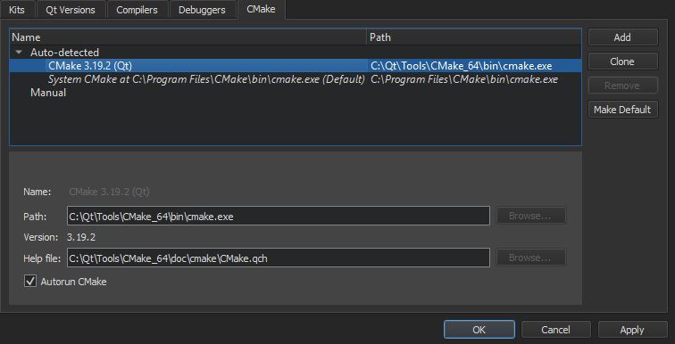
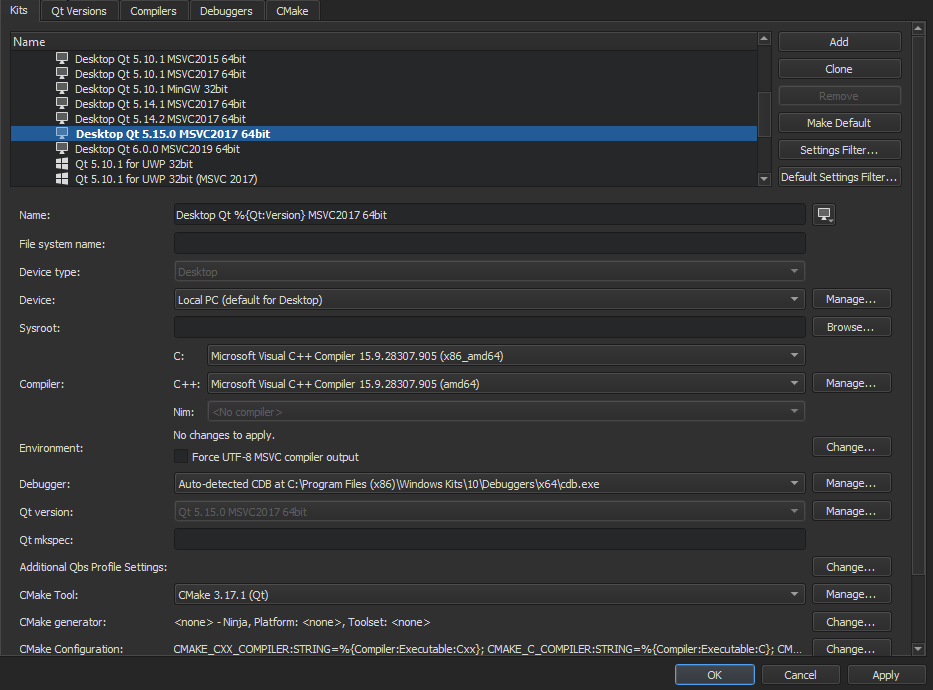

Setting Up CMake
CMake automates the configuration of build systems. It controls the software compilation process by using simple configuration files, called CMakeLists.txt files. CMake generates native build configurations and workspaces that you can use in the compiler environment of your choice.
You can use CMake from Qt Creator to build applications for the desktop and Android devices. You can also build single files to test your changes.
Qt Creator automatically detects the CMake executable specified in the PATH. You can add paths to other CMake executables and use them in different build and run kits.
CMake documentation is installed in Qt help file format (.qch) when you install CMake. It is automatically registered by Qt Creator, and you can view it in the Help mode.
Qt Creator automatically runs CMake to refresh project information when you edit a CMakeLists.txt configuration file in a project. Project information is also automatically refreshed when you build the project.

If Qt Creator cannot load the CMake project, the Projects view shows a <File System> project node to avoid scanning the file system and load the project faster. The node shows the same files as the File System view. Select Build > Clear CMake Configuration, and then select Build > Run CMake to reconfigure the project.
Adding CMake Tools
Qt Creator requires CMake's file-based API, and therefore you'll need CMake version 3.14, or later.
To view and specify settings for CMake:
- Select Tools > Options > Kits > CMake.

- The Name field displays a name for the CMake installation.
- The Path field displays the path to the CMake executable.
- The Help file field displays the path to the CMake help file (.qch) provided by and installed with CMake.
- Deselect the Autorun CMake check box if you do not want to automatically run CMake every time when you save changes to
CMakeLists.txtfiles. - Select Apply to save your changes.
To add a path to a CMake executable that Qt Creator does not detect automatically, and to specify settings for it, select Add. To make changes to automatically detected installations, select Clone.
Qt Creator uses the default CMake if it does not have enough information to choose the CMake to use. To set the selected CMake executable as the default, select Make Default.
To remove the selected CMake executable from the list, select Remove.
Select the Kits tab to add the CMake tool to a build and run kit. The kit also specifies the CMake generator that is used for producing project files for Qt Creator and the initial configuration parameters:

For more information, see Adding Kits.
Editing CMake Configuration Files
To open a CMakeLists.txt file for editing, right-click it in the Projects view and select Open With > CMake Editor.
You can also use the cmo filter in the locator to open the CMakeLists.txt file for the current run configuration in the editor. This is the same build target as when you select Build > Build for Run Configuration.
The following features are supported:
- Pressing F2 when the cursor is on a filename to open the file
- Keyword completion
- Code completion
- Path completion
- Auto-indentation
- Matching parentheses and quotes
Warnings and errors are displayed in the Issues output pane.
Adding External Libraries to CMake Projects
Through external libraries, Qt Creator can support code completion and syntax highlighting as if they were part of the current project or the Qt library.
Qt Creator detects the external libraries using the find_package() macro. Some libraries come with the CMake installation. You can find those in the Modules directory of your CMake installation. For more information, see cmake-packages(7).
Syntax completion and highlighting work once your project successfully builds and links against the external library.